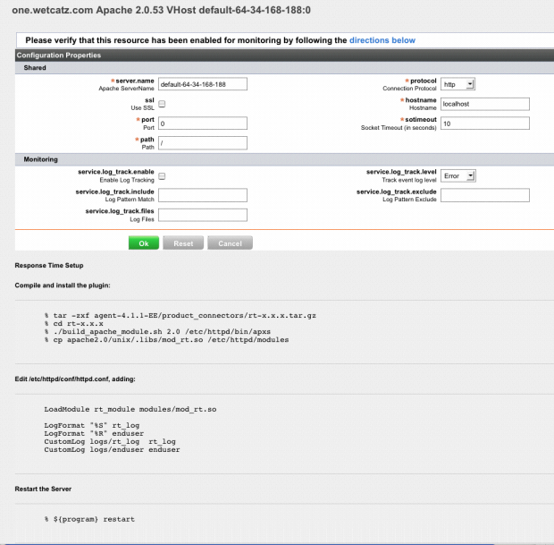

Topics marked with * relate to features available only in vFabric Hyperic.
- Element Overview
- Parentage
- Contents
- Examples
- help element defines a named block of HTML
- help element defines help for a service type explicitly and by reference with append attribute
- help element defines help for a service type by reference with append and include attributes
- help element references a named block of HTML, by virtue of element location
- help element references two named blocks of HTML using include and append attributes
Element Overview
The <help> element is used to:
- to define a named block of HTML, and
- to associate a named <help> element by reference to its name with a specific resource type. The referenced help content will be included on the Configuration Properties page for instances of that resource type, as shown in the bottom portion of the page below.

Parentage
The <help> element can be the child of:
- <plugin> (root) - In the root of a plugin a <help> element can:
- Defines a named block of HTML that can be associated by reference with instances of the server types or service types that the plugin manages. Note that the content defined in <help> element in the descriptor root will only appear as help if another <help> element associates with a resource type.
- Associate a named block of HTML with instances specific resource type the plugin manages.
- <server> or <service> - Within a resource element, a <help> element define an unnamed block of HTML that will be presented as help on the Configuration Properties page for all instances of the resource type.
Contents
- name - This attribute assigns a name to the <help> element, by which it can be referenced to associate it with a resource type. In HQ plugins, named <help> element are defined in the the root of the plugin descriptor.
- HTML content - The text formatted as HTML within a <help> element will be presented on Configuration Properties page for instances of resources types the element is associated with.
- include - Used to specify the name attribute of a <help> element to include in the Configuration Properties page for instances of resources types the element is associated with. Help content pointed to by the include attribute will appear before any HTML content contained in the body of the <help> element.
- append - Similar to the include attribute, append is used to specify the name attribute of a <help> element to include in the Configuration Properties page for instances of resources types the element is associated with. Help content pointed to by the attribute attribute will appear after any HTML content contained in the body of the <help> element.
Examples
help element defines a named block of HTML
This <help> element in the root of HQ's apache-plugin specifies a block of HTML and names it "restart-server". Another <help> element in the descriptor can include this content by setting its include or append attribute to "restart-server". (The only functional difference between include or append is relates to sequence in which the referenced content is presented.)
<help name="restart-server">
<![CDATA[
<p><h4>Restart the Server</h4></p>
<pre>
% $\{program\} restart
</pre>
]]>
</help>
Note that because the <help> element is defined in the root of the plugin, it must be referenced in a resource element later in the plugin. Otherwise the help content will not appear on any Configuration Properties page.
help element defines help for a service type explicitly and by reference with append attribute
This <help> element in the root of HQ's apache-plugin defines the help for services whose type is "Apache 1.3 VHost". The HTML within the body of the element will be presented first. The content of the <help> element named "restart-server" will appear after the HTML defined in the body, because it is referenced with the append attribute. (See the screen shot on the previous page.)
<help name="Apache 1.3 VHost" append="restart-server">
<![CDATA[
<p>
<h3>Response Time Setup</h3>
<h4>Compile and install the plugin:</h4>
</p>
<pre>
% tar zxf agent$\{HQVersion\}/product_connectors/rt-$\{rtVersion\}.tar.gz
% cd rt-$\{rtVersion\}
% ./build_apache_module.sh 1.3 $\{installpath\}/bin/apxs
% cp apache1.3/unix/mod_rt.so $\{installpath\}/libexec
</pre>
<p><h4>Edit $\{installpath\}/conf/httpd.conf, adding:</h4></p>
<pre>
LoadModule rt_module libexec/mod_rt.so
RtLog logs/rt_log
EndUserLog logs/enduser
</pre>
<p>
<h4>If the ClearModuleList directive is in your config file,
you will need to add:</h4>
</p>
<pre>
AddModule mod_rt.c
</pre>
]]>
</help>
help element defines help for a service type by reference with append and include attributes
This <help> element defines the help for services whose type is "MySQL Process 5.x". The several bits of HTML will be ordered in this way:
- The content of the <help> element named "MySQL 5.x" will appear prior to any HTML in the body, because it is referenced using the include attribute.
- The HTML included in the body of the element will appear next.
- The content of the <help> element named "mysql-process" will appear after any HTML in the body, because it is referenced using the append attribute.
<help name="MySQL Process 5.x" include="MySQL 5.x" append="mysql-process"/> <\!\[CDATA\[ <p><h4>If you want something done right</h4></p> <pre> Do it yourself\! </pre> \]\]>
help element references a named block of HTML, by virtue of element location
This excerpt from the bind-plugin illustrates a different method of associating a named block of HTML to a specific version of a resource type. In this example, the referencing <help> element is located in the <server> element that defines the defines Bind 9.x server type. In this usage you do not need to use the name attribute to define the resource type version explicitly.
<server name="Bind"
version="9.x"
platforms="Unix">
<plugin type="measurement"
class="BindMeasurementPlugin"/>
<plugin type="autoinventory"
class="BindServerDetector"/>
<config>
<option name="rndc"
description="Path to rndc"
default="/usr/sbin/rndc"/>
<option name="named.stats"
description="Path to named.stats"
default="/var/named/named.stats"/>
<option name="process.query"
description="Process query for named"
default="State.Name.eq=named"/>
</config>
<metrics include="process,rndc"/>
<help include="rndc"/>
</server>
help element references two named blocks of HTML using include and append attributes
<help name="MySQL Process 3.x"
include="MySQL 3.x"
append="mysql-process"/>
The content in the <help> element named "MySQL 3.x" will precede the content in the <help> element named "mysql-process".
{kind=link}